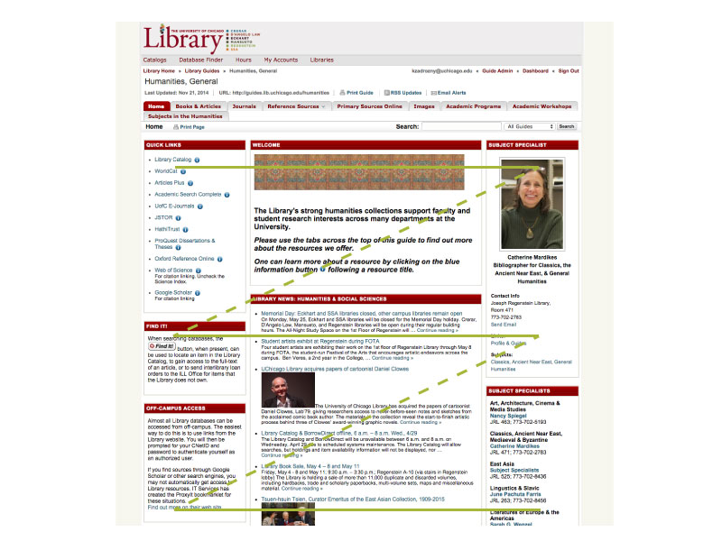
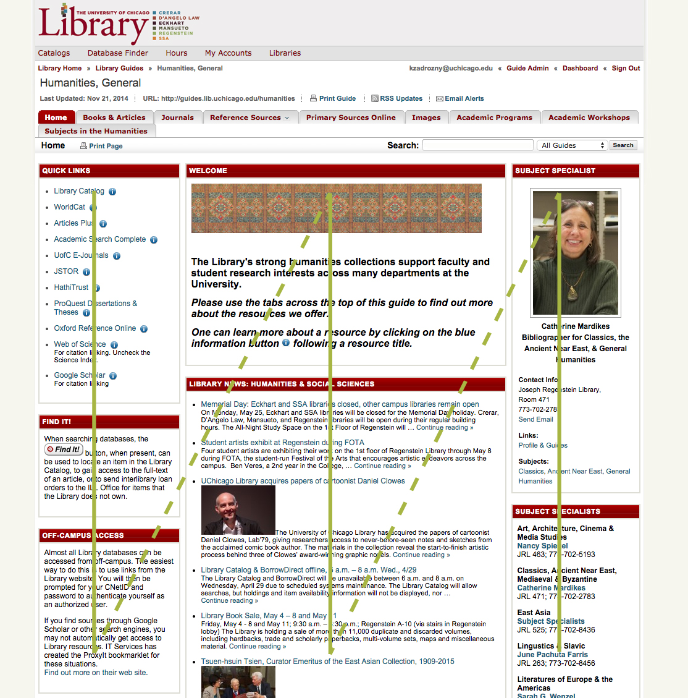
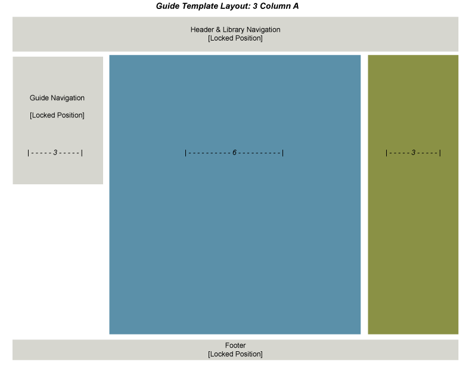
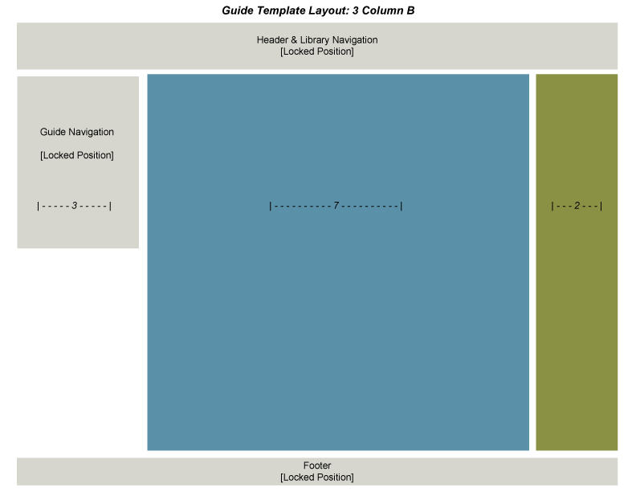
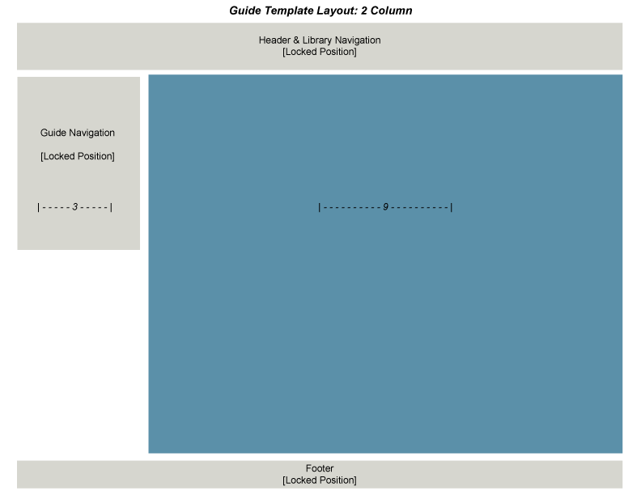
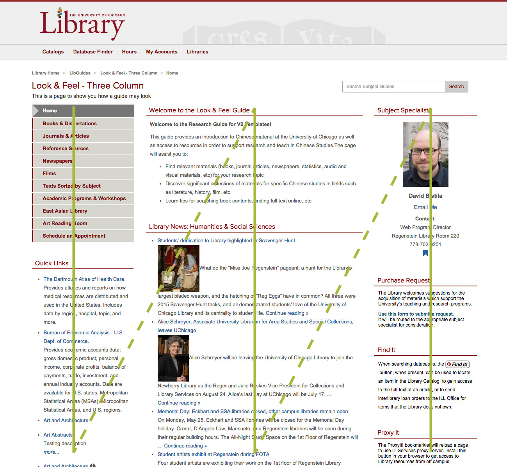
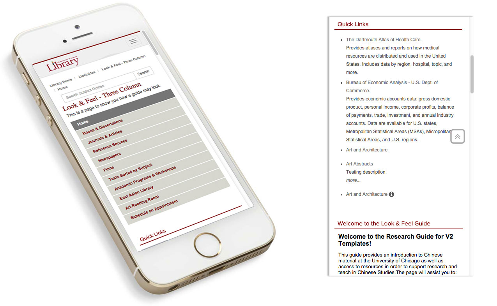

Mobile view with LibGuides v1

Content Flow Online: Assumed

Content Flow Online: Reality
New Template Requirements
- Follow content flow to meet mobile and accessibility requirements
- Responsive menu (no tabs)
- Important boxes keep hierarchy in all views
- Flexible to all guide types
Solution
Three templates with choices between two and three columns

LibGuides v2 Templates

LibGuides v2 Templates

LibGuides v2 Templates
LibGuides v2 Template: Three Column, Equal Sides

LibGuides v2 Template: Content Flow

Mobile view with LibGuides v2